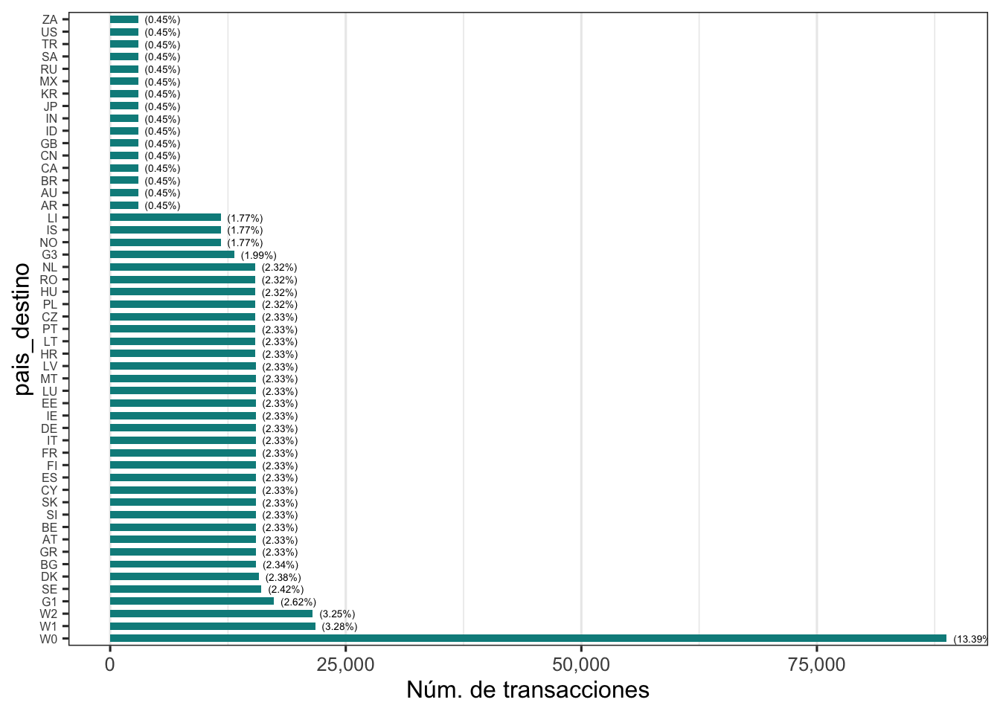
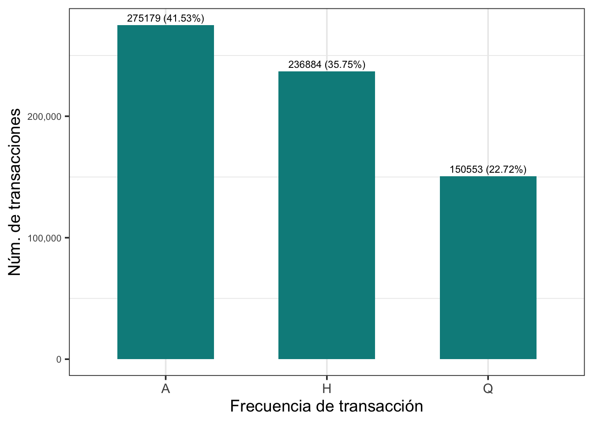

Chapter 2 Analisis Univariado
A continuación se procederá a examinar cada variable de forma individual con el objetivo de entender su distribución, medidas centrales y de dispersión. Para complementar el análisis utilizaremos tablas estadísticas y gráficas según se considere adecuado.
Target Variable: TYPE_FRAUD
Tabla
tabla_y <- df %>%
count(TYPE_FRAUD, name = "Fraude") %>%
mutate(Porcentaje = round(Fraude / sum(Fraude) * 100, 1))
kable(tabla_y)| TYPE_FRAUD | Fraude | Porcentaje |
|---|---|---|
| F | 1944 | 0.3 |
| _Z | 660672 | 99.7 |
La variable TYPE_FRAUD representa la clasificación del fraude indentificado en una transacción. Del total de observaciones, 660.672 no están relacionadas a un caso de fraude, mientras que 1944 transacciones fueron marcadas como movimientos fraudulentos. Debido al alto desequilibrio entre las observaciones legales y las transacciones fraudulentas se debe tener mucha precaución a la hora de construir el modelo de predicción.
Gráfico
tabla_y %>%
ggplot(aes(x = factor(TYPE_FRAUD), y = Fraude)) +
geom_col(fill = "#008B8B", width = 0.6) +
geom_text(aes(label = paste0(Fraude, " (", Porcentaje, "%)")), vjust = -0.5, size = 3) +
scale_y_continuous(labels = comma) +
labs(x = "Tipo de transacción", y = "Núm. de transacciones") +
theme_bw(base_size = 14) +
theme(
plot.title = element_blank(),
strip.background = element_rect(fill = "gray80", color = NA),
strip.text = element_text(face = "bold"),
panel.grid.major.y = element_blank(),
axis.text.y = element_text(size = 8)
) Este gráfico muestra la distribución del tipo de transacción, confirmando que la mayoria de transacciones observadas no fueron marcadas como fraude. Puntualmente el 99.7% de las transacciones fueron consideradas legales, mientras que el 0.3% fueron asociadas con algún comportamiento irregular. Esta notable diferencia indica un alto desbalance en las clases de la variable objetivo, lo cual es importante destacar al momento de construir modelos predictivos.
Categóricas
FREQ
Describe la recurrencia con la que se realiza determinado pago (Anual, trimestral, semestral, etc.). Se categoriza en:
- A: Transacciones anuales
- H: Transacciones semestrales
- Q: Transacciones trimestrales
Tabla
tabla_freq <- df %>%
count(Categoria=FREQ, name = "Frecuencia") %>%
mutate(Porcentaje = round(Frecuencia / sum(Frecuencia) * 100, 2))
kable(tabla_freq)| Categoria | Frecuencia | Porcentaje |
|---|---|---|
| A | 275179 | 41.53 |
| H | 236884 | 35.75 |
| Q | 150553 | 22.72 |
Gráfico
# Gráfico
tabla_freq %>%
ggplot(aes(x = factor(Categoria), y = Frecuencia)) +
geom_col(fill = "#008B8B", width = 0.6) +
geom_text(aes(label = paste0(Frecuencia, " (", Porcentaje, "%)")), vjust = -0.5, size = 3) +
scale_y_continuous(labels = comma) +
labs(x = "Frecuencia de transacción", y = "Núm. de transacciones") +
theme_bw(base_size = 14) +
theme(
plot.title = element_blank(),
strip.background = element_rect(fill = "gray80", color = NA),
strip.text = element_text(face = "bold"),
panel.grid.major.y = element_blank(),
axis.text.y = element_text(size = 8)
)
La tabla y gráfico anteriores describen la distribución de la variable FREQ del dataset, que permite caracterizar la recurrencia habitual de las transacciones. Las transacciones anuales (A) representan un 41.53% del total, mientras que la frecuencia semestral (H) y trimestral (Q) agrupan un 35.75% y 22.72%, cada una. En números exactos esto es 275.179, 236.884 y 150.553 transacciones respectivamente.
COUNTRY_ORIGIN
Presenta el código del país origen del movimiento bancario.
Tabla
lookup <- tibble(
Categoria = c("RO","HU","PL","CZ","NL","PT","LT","DE","FI","LU","GR","BE","ES","LV","IT","AT","FR","IE","CY","EE","SK","SI","MT","BG","HR","DK","U2","B0","SE"),
NombrePais = c("Romania","Hungary","Poland","Czech Republic","Netherlands","Portugal","Lithuania","Germany","Finland","Luxembourg","Greece","Belgium","Spain","Latvia","Italy","Austria","France","Ireland","Cyprus","Estonia","Slovakia","Slovenia","Malta","Bulgaria","Croatia","Denmark","Euro Area changing composition","EU changing composition","Sweden")
)
tabla_country <- df %>%
count(Categoria=COUNTRY_ORIGIN, name = "Frecuencia") %>%
mutate(Porcentaje = round(Frecuencia / sum(Frecuencia) * 100, 2)) %>%
arrange(desc(Frecuencia)) %>%
left_join(lookup, by = "Categoria") %>%
mutate(Categoria = factor(Categoria, levels = Categoria))
kable(tabla_country) %>%
scroll_box(width = "100%", height = "400px")| Categoria | Frecuencia | Porcentaje | NombrePais |
|---|---|---|---|
| RO | 28816 | 4.35 | Romania |
| HU | 28794 | 4.35 | Hungary |
| PL | 28267 | 4.27 | Poland |
| CZ | 28133 | 4.25 | Czech Republic |
| NL | 27274 | 4.12 | Netherlands |
| PT | 25672 | 3.87 | Portugal |
| LT | 25590 | 3.86 | Lithuania |
| DE | 25219 | 3.81 | Germany |
| FI | 25162 | 3.80 | Finland |
| LU | 25156 | 3.80 | Luxembourg |
| GR | 25146 | 3.79 | Greece |
| BE | 25145 | 3.79 | Belgium |
| ES | 25139 | 3.79 | Spain |
| LV | 25132 | 3.79 | Latvia |
| IT | 25130 | 3.79 | Italy |
| AT | 25125 | 3.79 | Austria |
| FR | 25119 | 3.79 | France |
| IE | 25115 | 3.79 | Ireland |
| CY | 25109 | 3.79 | Cyprus |
| EE | 25108 | 3.79 | Estonia |
| SK | 25108 | 3.79 | Slovakia |
| SI | 25104 | 3.79 | Slovenia |
| MT | 25090 | 3.79 | Malta |
| BG | 24652 | 3.72 | Bulgaria |
| HR | 23980 | 3.62 | Croatia |
| DK | 10768 | 1.63 | Denmark |
| U2 | 3352 | 0.51 | Euro Area changing composition |
| B0 | 3220 | 0.49 | EU changing composition |
| SE | 1991 | 0.30 | Sweden |
Gráfico
# Gráfico
tabla_country %>%
ggplot(aes(x = Frecuencia, y = Categoria)) +
geom_col(fill = "#008B8B", width = 0.6) +
geom_text(aes(label = paste0(" (", Porcentaje, "%)")), vjust = 0.3, hjust=-0.1, size = 2) +
scale_x_continuous(labels = comma) +
labs(x = "Núm. de transacciones", y = "País") +
theme_bw(base_size = 12) +
theme(
plot.title = element_blank(),
strip.background = element_rect(fill = "gray80", color = NA),
strip.text = element_text(face = "bold"),
panel.grid.major.y = element_blank(),
axis.text.y = element_text(size = 8)
)
La tabla y gráfico anteriores describen la distribución de la variable COUNTRY_ORIGIN del dataset, que permite caracterizar el origen de las transacciones. A simple vista se puede notar que los países tienen frecuencias muy similares, no hay único país que destaque de forma dominante frente a los demás. Romania, Hungría, Polonia, República Checa y Paises bajos son los 5 territorios con el porcentaje de origen más alto superior al 4% cada uno. Por otro lado, encontramos entidades especiales como la “Euro Area changing composition” y “EU changing composition” que presentan una baja frecuencia frente a otros mercados (menos del 1%).
Euro Area changing composition/EU changing composition: hace referencia a países que han sido incluidos/excluidos de la zona del euro o en la unión europea en el transcurso de los años. Por ejemplo, Grecia se incorporó al uso del euro en el año 2000, mientras que Groenlandia que se retiró de la Unión Europea (anteriormente Comunidad Europea) en 1985.
COUNTRY_DESTINATION
Presenta el código del país destino del movimiento bancario.
Tabla
lookup_org <- tibble(
Categoria = c("W0","W1","W2","G1","SE","DK","BG","GR","AT","BE","SI","SK","CY","ES","FI","FR","IT","DE","IE","EE","LU","MT","LV","HR","LT","PT","CZ","PL","HU","RO","NL","G3","NO","IS","LI","AR","AU","BR","CA","CN","GB","ID","IN","JP","KR","MX","RU","SA","TR","US","ZA"),
NombrePais = c("World","Rest of the World","Domestic (home or reference area)","Extra EEA","Sweden","Denmark","Bulgaria","Greece","Austria","Belgium","Slovenia","Slovakia","Cyprus","Spain","Finland","France","Italy","Germany","Ireland","Estonia","Luxembourg","Malta","Latvia","Croatia","Lithuania","Portugal","Czech Republic","Poland","Hungary","Romania","Netherlands","Other EEA countries (all countries excluding the reference area)","Norway","Iceland","Liechtenstein","Argentina","Australia","Brazil","Canada","China","United Kingdom","Indonesia","India","Japan","Korea, Republic of","Mexico","Russian Federation","Saudi Arabia","Turkey","United States","South Africa")
)
tabla_country_dest <- df %>%
count(Categoria=COUNTRY_DESTINATION, name = "Frecuencia") %>%
mutate(Porcentaje = round(Frecuencia / sum(Frecuencia) * 100, 2)) %>%
arrange(desc(Frecuencia)) %>%
left_join(lookup_org, by = "Categoria") %>%
mutate(Categoria = factor(Categoria, levels = Categoria))
kable(tabla_country_dest) %>%
scroll_box(width = "100%", height = "400px")| Categoria | Frecuencia | Porcentaje | NombrePais |
|---|---|---|---|
| W0 | 88733 | 13.39 | World |
| W1 | 21755 | 3.28 | Rest of the World |
| W2 | 21507 | 3.25 | Domestic (home or reference area) |
| G1 | 17392 | 2.62 | Extra EEA |
| SE | 16057 | 2.42 | Sweden |
| DK | 15769 | 2.38 | Denmark |
| BG | 15488 | 2.34 | Bulgaria |
| GR | 15440 | 2.33 | Greece |
| AT | 15437 | 2.33 | Austria |
| BE | 15437 | 2.33 | Belgium |
| SI | 15437 | 2.33 | Slovenia |
| SK | 15437 | 2.33 | Slovakia |
| CY | 15436 | 2.33 | Cyprus |
| ES | 15436 | 2.33 | Spain |
| FI | 15436 | 2.33 | Finland |
| FR | 15436 | 2.33 | France |
| IT | 15436 | 2.33 | Italy |
| DE | 15435 | 2.33 | Germany |
| IE | 15435 | 2.33 | Ireland |
| EE | 15434 | 2.33 | Estonia |
| LU | 15434 | 2.33 | Luxembourg |
| MT | 15433 | 2.33 | Malta |
| LV | 15432 | 2.33 | Latvia |
| HR | 15429 | 2.33 | Croatia |
| LT | 15417 | 2.33 | Lithuania |
| PT | 15417 | 2.33 | Portugal |
| CZ | 15413 | 2.33 | Czech Republic |
| PL | 15401 | 2.32 | Poland |
| HU | 15386 | 2.32 | Hungary |
| RO | 15385 | 2.32 | Romania |
| NL | 15369 | 2.32 | Netherlands |
| G3 | 13173 | 1.99 | Other EEA countries (all countries excluding the reference area) |
| NO | 11735 | 1.77 | Norway |
| IS | 11732 | 1.77 | Iceland |
| LI | 11727 | 1.77 | Liechtenstein |
| AR | 2960 | 0.45 | Argentina |
| AU | 2960 | 0.45 | Australia |
| BR | 2960 | 0.45 | Brazil |
| CA | 2960 | 0.45 | Canada |
| CN | 2960 | 0.45 | China |
| GB | 2960 | 0.45 | United Kingdom |
| ID | 2960 | 0.45 | Indonesia |
| IN | 2960 | 0.45 | India |
| JP | 2960 | 0.45 | Japan |
| KR | 2960 | 0.45 | Korea, Republic of |
| MX | 2960 | 0.45 | Mexico |
| RU | 2960 | 0.45 | Russian Federation |
| SA | 2960 | 0.45 | Saudi Arabia |
| TR | 2960 | 0.45 | Turkey |
| US | 2960 | 0.45 | United States |
| ZA | 2960 | 0.45 | South Africa |
Gráfico
# Gráfico
tabla_country_dest %>%
ggplot(aes(x = Frecuencia, y = Categoria)) +
geom_col(fill = "#008B8B", width = 0.6) +
geom_text(aes(label = paste0(" (", Porcentaje, "%)")), vjust = 0.5, hjust=-0.1, size = 1.8) +
scale_x_continuous(labels = comma) +
labs(x = "Núm. de transacciones", y = "COUNTRY_DESTINATION") +
theme_bw(base_size = 12) +
theme(
plot.title = element_blank(),
strip.background = element_rect(fill = "gray80", color = NA),
strip.text = element_text(face = "bold"),
panel.grid.major.y = element_blank(),
axis.text.y = element_text(size = 6)
)
La tabla y gráfico anteriores describen la distribución de la variable COUNTRY_DESTINATION del dataset, que permite caracterizar el destino de las transacciones. Empezamos destacando que el 22.54% de las transacciones no especifican el destino final si no que generalizan en entidades como World, Rest of the World, Domestic y Extra EEA cada una con una representación del 13%, 3.28%, 3.25% y 2.62%. Para los paises europeos explicitamente listados se manejan porcentajes de representación del 2% cada uno aproximadamente. Mientras que, los paises destino fuera de la EEA comprenden menos del 1% cada uno.
World: Hace referencia a todo el conjunto de pais e instituciones existentes, incluyendo al país de referencia.
Rest of the world: Hace referencia a todo el conjunto de pais e instituciones existentes, excluyendo al país de origen.
Domestic: Hace referencia a las entidades dentro del territorio economico de un país
Extra EEA: Hace referencia a los demás paises y entidades del Espacio Económico Europeo, incluyendo Noruega, Islandia y Liechtenstein.
Other EEA countries (all countries excluding the reference area): Hace referencia a los demás paises y entidades del Espacio Económico Europeo excluyendo al país de origen
TYPE_TRX
Describe el tipo de movimiento bancario realizado.
Tabla
lookup_instrument <- tibble(
Categoria = c("CHQ","CP0","CT0","CW1","DD","EMP0","MREM","ND0","ND1","ND2","ND3","SER","TOTL","TOTL1"),
NombreInstrumento = c(
"Cheques",
"Card payments",
"Credit transfers",
"Cash withdrawals using cards",
"Direct debits",
"E-money payments",
"Money remittances",
"Other services (not included in Directive (EU) 2013/2466)",
"Credits to the accounts by simple book entry",
"Debits from the accounts by simple book entry",
"Other services than credits and debits from the accounts by simple book entry",
"Other payment services",
"Total payment transactions",
"Total payment transactions, excluding cash withdrawals"
)
)
tabla_typetrx <- df %>%
count(Categoria=TYPE_TRX, name = "Frecuencia") %>%
mutate(Porcentaje = round(Frecuencia / sum(Frecuencia) * 100, 2)) %>%
arrange(desc(Frecuencia)) %>%
left_join(lookup_instrument, by = "Categoria") %>%
mutate(Categoria = factor(Categoria, levels = Categoria))
kable(tabla_typetrx) %>%
scroll_box(width = "100%", height = "400px")| Categoria | Frecuencia | Porcentaje | NombreInstrumento |
|---|---|---|---|
| DD | 96675 | 14.59 | Direct debits |
| CT0 | 96663 | 14.59 | Credit transfers |
| EMP0 | 92772 | 14.00 | E-money payments |
| CHQ | 92173 | 13.91 | Cheques |
| CP0 | 59765 | 9.02 | Card payments |
| SER | 56997 | 8.60 | Other payment services |
| MREM | 52272 | 7.89 | Money remittances |
| TOTL | 48151 | 7.27 | Total payment transactions |
| TOTL1 | 44336 | 6.69 | Total payment transactions, excluding cash withdrawals |
| CW1 | 18738 | 2.83 | Cash withdrawals using cards |
| ND1 | 1624 | 0.25 | Credits to the accounts by simple book entry |
| ND2 | 1624 | 0.25 | Debits from the accounts by simple book entry |
| ND0 | 415 | 0.06 | Other services (not included in Directive (EU) 2013/2466) |
| ND3 | 411 | 0.06 | Other services than credits and debits from the accounts by simple book entry |
Gráfico
# Gráfico
tabla_typetrx %>%
ggplot(aes(x = factor(Categoria), y = Frecuencia)) +
geom_col(fill = "#008B8B", width = 0.6) +
geom_text(aes(label = paste0(" (", Porcentaje, "%)")), vjust = -0.5, size = 2.2) +
scale_y_continuous(labels = comma) +
labs(x = "Tipo de transacción", y = "Núm. de transacciones") +
theme_bw(base_size = 12) +
theme(
plot.title = element_blank(),
strip.background = element_rect(fill = "gray80", color = NA),
strip.text = element_text(face = "bold"),
panel.grid.major.y = element_blank(),
axis.text.y = element_text(size = 8)
)
La tabla y gráfico anteriores describen la distribución de la variable TYPE_TRX del dataset, que permite caracterizar el movimiento bancario realizado y su instrumento. Los debitos directos y transferencias de credito son las categorías más grandes con un porcentaje del 14.59% cada una, seguida por pagos electronicos (13.91%) y cheques (9.02%). El pago por tarjetas de credito predomina ligeramente sobre otros servicios de pago, observandose un 9.02% sobre un 8.60%. Con aproximadamente un 1% de participación la categorías ND* son marginales y podría considerarse su agrupación. Mientras que las columnas de TOTL y TOLT representan rotales agregados, no instrumentos individuales.
TYPE_PSP
Caracteriza al proveedor que realiza la transacción. Se categoriza en:
- 1 Payer’s PSP: Proveedor de servicios de pago del pagador. Entidad que procesa el pago de quien envía el dinero.
- 2 Payee’s PSP: Proveedor de servicios de pago del beneficiario. Entidad que procesa el pago de quien recibe el dinero.
**- _Z NA:** Transacciones sin rol definifido o internas.
Tabla
tabla_psp <- df %>%
count(Categoria=TYPE_PSP, name = "Frecuencia") %>%
mutate(Porcentaje = round(Frecuencia / sum(Frecuencia) * 100, 2))
kable(tabla_psp)| Categoria | Frecuencia | Porcentaje |
|---|---|---|
| 1 | 387724 | 58.51 |
| 2 | 270818 | 40.87 |
| _Z | 4074 | 0.61 |
Gráfico
# Gráfico
tabla_psp %>%
ggplot(aes(x = factor(Categoria), y = Frecuencia)) +
geom_col(fill = "#008B8B", width = 0.6) +
geom_text(aes(label = paste0(Frecuencia, " (", Porcentaje, "%)")), vjust = -0.5, size = 3) +
scale_y_continuous(labels = comma) +
labs(x = "Tipo de transacción", y = "Núm. de transacciones") +
theme_bw(base_size = 14) +
theme(
plot.title = element_blank(),
strip.background = element_rect(fill = "gray80", color = NA),
strip.text = element_text(face = "bold"),
panel.grid.major.y = element_blank(),
axis.text.y = element_text(size = 8)
)
La tabla y gráfico anteriores describen la distribución de la variable TYPE_PSP del dataset, que permite caracterizar el rol de la transacción. El 58.51% de las transacciones se registraron desde el psp del pagador, esto es 387.724, frente a 270.818 o 40.87% asociadas al psp del beneficiario. Por otro lado, se tiene un 0.61% de transacciones no asociadas a ninguna de las clasificaciones anteriores, quizá por tratarse de movimientos monetarios internos.